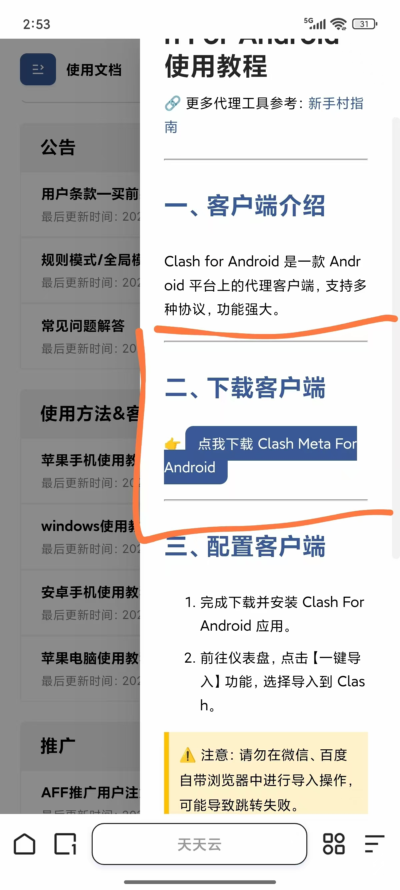
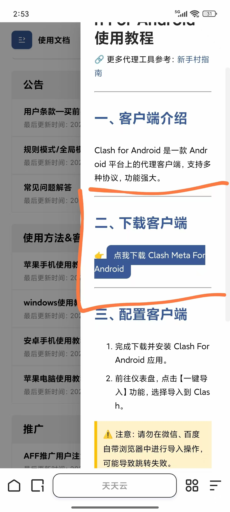
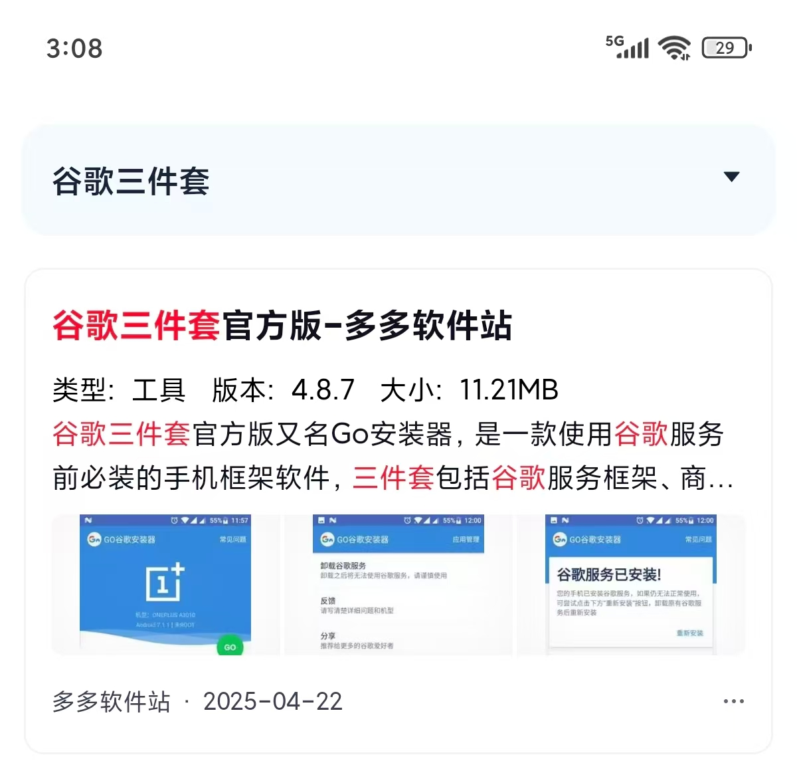
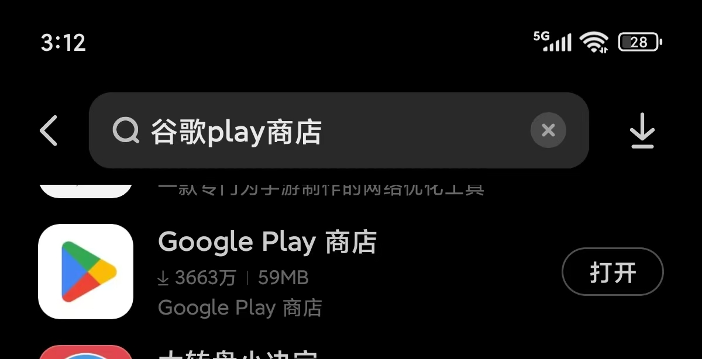
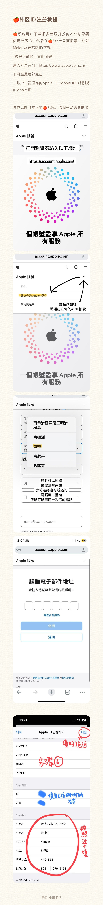

1.clash
买节点的网址：
天天云（适合买长期的，价格稍贵）：https://x1.huangwei.xn--6qq986b3xl/#/dashboard
性价比机场（价格很便宜但是节点较少）：https://xingjiabijichang.vip/#/dashboard
软件下载：（以天天云为例，购买结点的网站都有安装包也有教程）

 

2.樱花猫（个人比较推荐这个，因为节点很多，方便攒票看广告）
网址：https://sakura-cat3.com/dashboard
1.安卓用户
首先去浏览器下载谷歌三件套
安装完后有异常点修复

然后去应用商店下载谷歌play商店
下载完之后就可以在play商店下载投票所需软件（需要挂梯子哦）
苹果用户
首先创建一个外区ID，否则应用商店搜不到相应的软件
注册完之后用此账户在app store里挂梯子下载